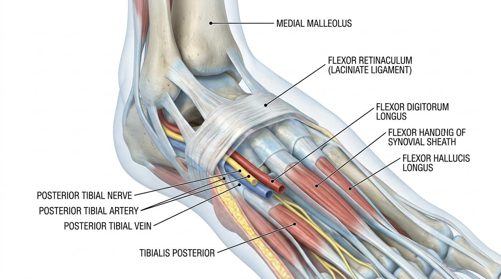

跗管综合征：屈肌支持带压迫致胫后神经卡压性病变
跗管综合征是一种卡压性神经病变，其病因在于位于内踝下方、由屈肌支持带构成的纤维骨性隧道对胫后神经产生物理性压迫。这与足底筋膜炎存在本质区别——本病的疼痛源于神经卡压机制，而非筋膜自身的炎症反应。
跗管的解剖结构与神经狭窄形成机制
跗管是位于内踝与跟骨之间的纤维骨性通道，其顶部由厚实的结缔组织——屈肌支持带覆盖。在此管道内，胫后动脉、静脉、神经，以及胫骨后肌、趾长屈肌、拇长屈肌的肌腱共同穿行而过。由于该通道是容积固定的封闭空间，反复的踝关节旋前动作或持续性的后足外翻畸形，会形成一种结构性脆弱状态，使管内压力逐渐升高。
当出现静脉曲张、腱鞘囊肿等占位性病变，或腱鞘增厚，抑或屈肌支持带本身因外伤而发生纤维化时，本已受限的管腔有效容积将进一步缩减。这会加剧作用于神经的张力压迫应激，导致神经传导功能下降。症状往往在长时间站立或行走时，或当踝关节被迫处于背屈外翻姿势时明显加重，因为这种姿势会使管内压力迅速升高。
鉴别诊断标准：足底筋膜炎、莫顿神经瘤与L5-S1神经根病变

内踝处Tinel征阳性、背屈外翻诱发试验，以及三重压迫应激试验，是诊断跗管综合征的关键临床检查标准。神经传导检测中胫神经远端运动与感觉潜伏期延长的表现，可作为确诊压迫性神经病变的客观指标；而MRI或超声检查则能通过确认占位性病变或支持带增厚来直观辨识其结构性病因。
上述诊断标准对于与足底筋膜炎、Baxter神经卡压综合征以及近端腰骶部神经根病变的鉴别诊断至关重要。足底筋膜炎局限于足底筋膜自身的炎症性病变，而跗管综合征在病理生理学上则截然不同，其表现为伴有整条神经通路麻木及感觉异常的狭窄性病变。
应用针刀实施屈肌支持带精确纵向松解的作用机制
针刀治疗的原理是通过对增厚的屈肌支持带及分隔各神经血管间室的邻近纤维隔进行精确的纵向切开，从而降低管内压力。操作过程中，进针点以内踝与跟腱之间的边界为基准设定，刀刃的切割方向须与神经、肌腱走行轴向保持平行，以严格避免对胫后动脉及神经分支造成直接损伤。
这种受控的支持带下筋膜切开技术，其操作过程为：在保持腱鞘完整性及神经血管结构位置稳定性的前提下实现管道减压。这与一项旨在评估针刀神经减压技术临床疗效与安全性的系统评价方案所得出的证据相符——该方案通过对增厚的屈肌支持带及邻近纤维隔进行精确纵向松解，在降低管内压力、恢复管腔容积的同时，保持胫后动脉与神经分支的位置[1]。
此项操作完成后，随着管内容积的恢复，可观察到如下康复趋势：神经压迫压力降低，胫后神经传导速度改善，足底感觉与运动功能逐步恢复正常。
生物力学空间减压推拿（SART Protocol）的病理应用原理
旨在弥补传统整骨推拿疗法局限性，通过生物力学机制扩大脊椎节段间隙与椎间孔的生物力学空间减压推拿（SART Protocol），是Bodyall韩医院不可或缺的核心整合方案之一。为解决跗管综合征特征性的管内病理性压力升高问题，该疗法通过松解踝关节及后足周围软组织，以及屈肌支持带邻近关节囊内的微小粘连，从而在管腔内确保有效空间。此举旨在通过缓解因反复旋前或后足外翻而变得僵硬的组织张力，从而防止管内压力的再次升高。
在通过针刀治疗直接解除屈肌支持带的物理性压迫因素之后，同步配合应用生物力学空间减压推拿（SART Protocol），可恢复踝关节整体活动度并稳定后足力线，从而在结构层面预防压迫性因素的复发。
临床有效率对比：针刀治疗与传统封闭疗法
| 治疗方法 | 临床有效率 | 主要作用机制 |
|---|---|---|
| 针刀治疗 | 87.18% | 通过纵向松解支持带直接降低管内压力 |
| 传统封闭疗法 | 61.53% | 通过保守管理缓解症状 |
在一项对80例跗管综合征患者进行的临床研究中，比较了针刀治疗与传统封闭疗法的疗效，结果证实针刀组的治疗有效率为87.18%，在统计学上显著优于对照组的61.53%[2]。这提示，对于因内踝下方屈肌支持带增厚而引起的持续性张力压迫性神经病变，采用针刀实施受控纵向切开松解，能够有效降低管内压力并改善神经传导功能。
Bodyall韩医院临床经验与学术证据的融合验证
💡 Q. 针刀治疗后神经压迫症状是如何改善的？
Bodyall韩医院在积累的针刀治疗临床经验中所观察到的屈肌支持带压迫缓解及神经传导改善趋势，与引用的学术研究[1]中所证实的通过精确纵向减压松解降低管内压力的机制，在学术上是一致的。
该疗法作为一种手术前阶段可安全考虑的非手术保守治疗替代方案，在临床上得以应用，其依据在于恢复管腔容积的同时，保持神经血管结构位置稳定性这一原则。
参考文献
- Sun, et al. (2020), 'Acupotomy for patients with tarsal tunnel syndrome', Medicine. DOI: 10.1097/md.0000000000022369
- Fu, et al. (2020), 'Clinical Study of Acupotomy Treatment for Tarsal Tunnel Syndrome', Journal of Acupuncture Research. DOI: 10.13045/jar.2020.00073